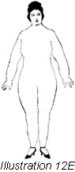

1926—The New-Way Course in Fashionable Clothes-Making
Lesson 45—Dress Design
The Fascination of Dress Design
The study of dress is a beautiful one. The study of dress design is as fascinating as it is beautiful. Every normal woman loves beautiful clothes, and it is but natural that her artistic tastes should find expression through the medium of dress.
As a beginner in clothes-making, you may have found the study of seams and hems and construction details rather dull and perhaps the least bit difficult. But now, in the study of line and form, color and harmony—in the study of dress creation possibilities of pleasure will be opened up to you such as you never dreamed the study of dress offered.
Frank Alvah Parsons, an authority on design and art in almost all its phases say that dress design is "life expressed in clothes." How true this is! Place a beautiful gown on a manikin and look at it for two minutes. No matter how exquisite the gown may be, you will tire after two or three seconds. But put that same gown on a woman for whom it is suited and you will be able to look at it for a half-hour without tiring. These is because the woman has a distinct personality, she has little peculiarities of line and color which are blended with the lines and color of the gown. Each time she moves, each time she lifts her arm, we see life—life expressed in the lines and colors of the dress—"life expressed in clothes."
Of course, we do not all judge beauty and art by the same standards. But that is just what makes our particular mode distinctive. Providing there is harmony in color, form, line and texture one may interpret beauty and art in one's own way. In design the four points mentioned cannot be disassociated. They are as important as the colors on the palette is to the arts, as the trees in the back-ground are to the landscape architect.
Throughout the ensuing paragraphs, in which the fundamental principles of design are taught, bear constantly in mind that occasion influences design. A dress should reflect the spirit both of the occasion and the wearer. The girl who wishes to feel at ease in the somber recesses of her study should wear a dress that is severely plain and simple. But the same girl, when she wears a flimsy little frock of lace and net will want to laugh and sing and dance—no matter how modest and retiring she may be by nature. As Voltaire tells us, "Dress changes the manners"—and clothes should be designed with a careful regard for the occasions on which they are to be worn.
The First Step in Design
Having assimilated the principles of design as outlined in the introductory lesson, the first step in the study of design is to find your exact silhouette and study it so carefully that you can carry a picture of it in your mind's eye. You remember don't you, that in the introductory lesson of Book II you learned a method of finding your exact silhouette. If you have forgotten this method, review it carefully. Before you can begin partial work on design, you must know what your silhouette is.
In studying your silhouette, note the strong and weak lines in your contour. Note carefully your height and breadth, the proportion of the masses, the balance, the coloring. Having found these proportions, you are ready to choose materials and build up designs—and you have a whole world of beauty—of shapes and decorations—to choose from.
Decoration
In design, all decoration must serve some function, some purpose. All parts of the garment should be supported at the structural points—as for instance, the sleeves should be so set in the dress as to appear to be supported by the shoulder. Very often a line of buttons down the front of the dress creates the "optical illusion" that gives this effect. Sometimes the trimming around the neck emphasizes the support of the shoulder.
But, you argue, perhaps you wish to add a ribbon flower to the girdle at the side of your frock. It serves no purpose, yet the frock looks very much prettier with it than without. Yes, the ribbon does serve a purpose—a very distinct purpose. There is an unbroken mass (mass, in design, is used to indicate a width or breadth of material unbroken by trimming of any kind) all around the waist which undoubtedly gives to the dress the appearance of hanging suspended without support. The flower placed where your good taste and judgment tells you it ought to be placed, breaks the line, gives a point of support and relieves the mass which would have otherwise been bare and unattractive.
And so it is with ornament and decoration throughout design. Even the tiniest plait must be in the right position, follow the right line. A tuck in the wrong place can throw the whole line of the dress out of proportion—and a bit of lace where an unbroken mass should be can spoil a whole dress. Of course, in connection with decoration you must study your own body requirements and find out whether a certain part of the body needs a straight unbroken line, or a point of support. Find your weak points in your silhouette, and strive incessantly to create designs that conceal these weak points.
Design Through the Ages
It is impossible to make a complete study of design without going way back in the history of dress to the time when dress itself had its inception. The study of dress is, in truth, the study of civilization. In history certain epochs stand out as being turning points in the history of man—and each new era claims its own distinct mode in dress. And each era of costume had its influence on the costume of the ensuing era, so that each generation borrowed something in the way of line or form from the generation that went before.
So you see that in order to master design, we must review the designs of other ages. We must, in fact, follow fashion through the ages, watching design surge forward with the development of art and beauty until it reaches its present highly developed form.
To give one specific instances: After the revolution in France the peasants of Paris plunged into a reckless round of gaiety. It was the natural outcome of love of life and laughter long pent up, and it was as though an avalanche of joyousness had been released. If you remember your history, you will know that it was the terror and nightmare of the two years of horror finding sudden relief. At last the people were free to do as they pleased, without the fear of being guillotined to restrain them.
Historians tell us that France went made with rejoicing. An eyewitness writes: "The room (formerly an aristocrat's drawing room) was a mass of swirling, twirling figures—men, women and children in weird, vivid clothes. It seemed natural that they should be dancing so wildly in their wild costumes in their sabots and aprons of two months ago, they would not have been able to take one step."
To study the dress of this era is to find immediately the source of the bright, gay dance costumes of today. That era in history had a distinct influence on dress, and that influence is still felt today. That is why, when you plan to design a new dance frock for yourself, you will instinctively choose a bright color and a gay style. If you study costume after the revolution, you will be able to design authoritatively, with a clear knowledge of artistic requirements.
A Short Study of Historic Costume
The complete study of fashion and design through the ages would alone fill a volume. We will just touch on the subject here—giving the student enough information to create present-day styles with a definite knowledge of the influence of other ages. This study of fashion through the ages will also reveal to the student the sources of design. Many are the "new, individual, Parisienne creations" offered to an expectant world of women today which are nothing more or less than adaptions of the gowns worn several generations ago!
It is not possible to begin at the very beginning and trace fashion from her first, feeble steps. Let us skip over the first few centuries when dress was still in an undeveloped stage and served more for a covering than an expression of beauty and art. We will begin at the twelfth century when costume first began to show interesting changes—changes which influenced costume and can be traced down to this very day.
Illustration 1 shows a costume of the twelfth century. The material is of some heavy woven thread—something like the serge we use today. Notice particularly the collar, bound and finished so neatly. The draped cape falls in soft folds and the sleeves are like our fitted sleeves of today. Note how evenly the parts of the body are divided and how clear the points of support at the shoulders and hips are.
of the twelfth century. The material is of some heavy woven thread—something like the serge we use today. Notice particularly the collar, bound and finished so neatly. The draped cape falls in soft folds and the sleeves are like our fitted sleeves of today. Note how evenly the parts of the body are divided and how clear the points of support at the shoulders and hips are.
A peep into the costume of the thirteenth century does not reveal striking changes. However, in this era we find that the tight bodice of the twelfth century has a tendency to disappear. In Fig 2, the French costume of the early thirteenth century is portrayed. Here we find the quiet, dignified lines that have a certain poetry of their own—a certain simple, rhythmic charm. Notice the soft draperies, the correct division of lines, the complete absence of ornamentation. As the gown is supported from the shoulders no decoration or ornamentation was necessary—hence the simplicity. This same dignified simplicity is found in early Greek and Roman costume which we will study in detail later. The influence of the thirteenth century, and of Grecian and Roman costumes are very definitely felt in the clothes of today.
In the fourteenth century, the long flowing lines are still in evidence but once again Fashion reverts to the tight bodice of the twelfth century. Illustration 3 shows an English woman of that period, wearing a velvet dress. It is interesting to see how closely the lines of the dress follow the lines of the waist and hips. In that era, the sleeves were very long and sometimes extended to about two inches below the wrists.
The costume of the fifteenth century is extremely interesting to the student of dress design. The influence of the Renaissance is evident in the dignity and simplicity of the lines. Remember that this is the period that immediately preceded the period of gaudy display and ostentation that Queen Elizabeth led. There is a certain empire suggestion in the cut of the dress of that period. (See Illustration 4.) The puffed and slashed sleeves are a distinct style note—and if you remember, it was only a short while ago that puffed sleeves and slashed sleeves were worn with a great deal of pride and were considered entirely modern and ultra-fashionable
Queen Elizabeth set the pace for a period of gaudy display and rich decoration in the sixteenth century. Even peasants, in an effort to emulate their proud queen, wore the gayest and brightest aprons they could get. We are going to show you a picture of a lady of the court of that era, to show how lack of good taste and love of decoration wreak havoc with design and make the richest costume ugly. Glance at Illustration 5. The lady is wearing a dress of rich blue velvet, with huge sleeves of very fine net and brocade. While the sleeves are interesting because they portray a historic style note, they are entirely unsuited to the person who is wearing the gown. The dress is really a combination of ideas adopted from outside sources, instead of an expression of art in harmony with the figure. In that era, dresses were cut very high and skirts usually fell open in front revealing underskirts of great beauty. this embroidered underskirt is an important feature of sixteenth century costume and can be traced in present-day styles. Note that the tight bodice remains.
The costumes of the seventeenth century are very picturesque. This era is conspicuous for the passing of the ruff at the collar and cuffs, and the appearance of the wide, flat collar. Even if we leave Europe and study the garments worn in America for a moment, we find the flat collars of the Quakers and the draped kerchiefs of the early settlers of that period. A very popular vogue for plaits and tucks predominated in this era, and we find that in almost all countries the full, well-draped skirt is favored. Illustration 6 portrays the characteristic fashion of Europe in the middle of the seventeenth century. You will notice the simplicity of the flat collar. Later in the century, the trend was towards a greater use of decoration, and if we study the costumes of France we find a very distinct trend towards the empire cut.
Now let us make a survey of costume in the eighteenth century. This period in the history of costume is very interesting, for we find that there was a great deal of freedom in individual interpretation of art and beauty. In Illustration 7 notice the balance in cut and arrangement. Notice the good taste in material and in detail. Attention is directed to the points of support which are so clearly defined. The gown truly expresses the individuality of the wearer which indicates that it was designed with a correct knowledge of line, form and harmony. Later in the eighteenth century we find individuality further expressed by the creation of "male" attire for women—in England where women had grown to love such sports as riding, cricket and driving a certain masculine tendency in apparel is evident. Perhaps the severely tailored clothes of today had their inception in that "fad."
In the nineteenth century good taste gave way to ugliness, and individuality was crushed in the capricious desire to follow every whim of a stupid mode. There was a general tendency towards fussiness, towards gaudy ornamentation. Tucks and plaitings were used a great deal, and skirts were made so full that three dresses could now be made from the material used. In Illustration 8 you see an attempt of the impossible in design—an attempt to be individual without regard for unity or balance. The only interesting feature for the student of design is in the plaitings and flutings which are so reminiscent of our own trimmings today.
The beginning of the twentieth century is interesting. Notice in Illustration 9 that the very tight bodice is still in vogue and that long, tight sleeves found favor. The high collar is of interest, though, as is also the embroidery trimming on the skirt and waist.
The Greek and Roman Influence
Before proceeding with a study of present-day costumes, in which the influence of historic costume is portrayed, let us make a general survey of early Greek and Roman costumes so that we can trace the influence of the Grecian mantle and Roman toga in our styles of today.
In Illustration 10 you see a typical Greek costume. Study it carefully. You know that the true aim of dress is to express beauty of the human form and at the same time make the garment artistic and beautiful. This beauty of the garment must be independent of the form on which it is worn—yet when worn it must blend with the lines and color of the wearer. In this illustration notice how the lines or divisions of the garment hang from the natural supports—the shoulder and hips. It is in the subtle form suggestion of the contour of the body that the greatest charm of Greek drapery lies. There is nothing superfluous in the way of decoration. The lines follow the lines of the body and fall in soft drapes that soften the lines and create an artistic whole.
Now glance at Illustration 11. Here you have a typical Roman costume, showing the simplicity and dignity of the era. The border of embroidery, classic in design, is of interest. Here also, the balance and mass divisions are splendid and the lines follow the lines of the body.
This completes the historic study of costume in connection with your lesson on design. You have had a brief, general survey of the predominating features of the costumes of the important eras in history—you have been shown the Greek and Roman influences—and now you are ready to apply this knowledge to present day costumes.
Above are four dresses. Before reading any further here study those dresses carefully and see if you can trace the style influence in each one—whether it has the tight bodice, the full skirt or the Roman influence. Then, after you have tested yourself, read the following paragraphs and see how nearly correct you are.
Illustration A shows distinctly the Grecian influence in the skirt. Note the balance and unity, the softly falling drapery. And attention is particularly directed to the rose at the waistline which comes directly at the point of support and relieves the unattractive unbroken mass.
In Illustration B we have many features of historic dress carried out in a rather modern manner. First there are the slashed sleeves which predominated in the fifteenth century. There is the Grecian influence in the skirt, the balance division in front and the rigid adherence to the form. The collar had its origin in the standing ruff of the time of queen Elizabeth.
Now glance at C. No doubt you will recognize at a glance the Roman influence. There is the rope girdle and the embroidered borders. Attention is drawn to the draped skirt and the unity and balance which characterizes the entire dress. This is a style which the "hippy" woman can wear to advantage as it gives a soft smooth line over the hips.
Here, in Illustration D, we have a distinct sixteenth century influence. You remember the embroidered underskirts of that era, and the wide sleeves. Here they are again, re-created to suit the whim of the modern miss.
In Conclusion
Design is a subject of inexhaustible interest and value. we have given you here only the important fundamental principles of design—enough to enable you to create for yourself the styles that are most appropriate for your figure—the styles that are beautiful in themselves, and that express beauty in your figure when worn. By studying this lesson, an also the introductory lesson and the introductory matter to Book II, you should be able to design correctly and authoritatively.
There are a few important details which we will add to the conclusion of this lesson. Remember that the woman with heavy arms should never wear the kimona style of waist. Remember that the woman with a large bust should wear dresses that run to V's and that are made with vests. The large-hipped woman should wear a lower-than normal waistline with a belt from one inch to two inches wide.
Refer to the "individual type" information which is given in the introductory lesson of this book. You will find there much valuable information in connection with design. And bear in mind that you must know your own silhouette, your own requirements before you can hope to create the kind of clothes that express "life in clothes."
Here, as a final test of your knowledge of design you have four distinct types—a stout woman (Illustration E), a slender woman (Illustration F), a small woman (Illustration G), and a tall woman (Illustration H). design gowns for each type. Pretend that the stout woman is dark with gray eyes and a fair complexion—and select colors accordingly. Then pretend that she is blonde with blue eyes, and design another gown. Glance through fashion magazines for suggestions, and either write out or sketch the dress for the particular figure you are thinking about. Then refer to the text and find out how closely you have come to the beautiful and the artistic.
Study the woman and study the dress, just as the portrait painter studies his canvas and his model. Pay attention to the requirements of line and color. Bear in mind the importance of balance and unity. Then express your own ideals of beauty and art—and before you realize it you will be designing clothes of charm and distinction.
The lesson on the use of the dress form (Lesson 21, Book 3), should be reviewed. The dress form should be used to determine just where trimming may be used to break a line or mass to make the garment becoming to your figure.
Lesson 45
Questions
- What is the first step in study of dress design?
- To what period can the present tendency toward capes on dresses be traced?
- What were the distinctive features of the fifteenth century costumes?
- In what period did square necks first become popular?
- Cut a picture from a magazine or catalog and trace its design back to historical costumes.
- Select one of the figures in illustrations 45-E, -F, -G or -H that is most like your figure and sketch a street dress, or cut one from a magazine. Tell the kind of material, colors, etc. that you would use.